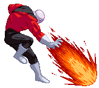

Warrior, Wake Up!
An OTG throw, Jiren picks the weak opponent's body off the floor and throws it away. If you try to use it a second time within the same combo, it won't work quite the same.


Boy!
A well-meant but stern karate chop which hits overhead. Doesn't combo from his Light attacks but knocks down on hit.

Hitfire
Jiren punches the ground and a fiery explosion erupts from the impact. Hold the button for a little while and he'll perform
a slightly more powerful version in which a second explosion erupts ahead of the first one.

Destroyer Fist
God button. Punish anyone foolish enough to attempt an aerial attack.
Hitting the opponent with this knocks them back into a wall-bounce (unless a wall-bounce has already happened earlier in a combo, in which case the opponent will just fall back and down).


Fire Crush
A short-range (but quite large) projectile from a single button press, now that's wild. Knocks down the opponent on hit.

Fire Kick
A bicycle kick that leaves a fiery trail.
Stomping Crush
Jiren performs a forward flip and then a quick stomping attack which can hit OTG.
You can delay the attack from coming out by holding the Strong Kick button, he'll keep on flipping.
After Jiren's done three flips, a more powerful version of the stomp comes out;
this version can knock the opponent over by stomping the ground they're standing on (making it an 'earthquake' type move).


Drop Kick
A back dash attack.


Infinity Rush
These are the flying fists of Justice! This flurry of punches can nullify incoming enemy projectiles.
To get the EX version to work, you'd mash two punch buttons at once, over and over. This EX version creates a lingering assault of flying fists
allowing Jiren to move around while the opponent is still getting hit.

Tidal Wave
Jiren boldly leaps into the air. If he connects with the opponent he grabs them and slams them down to the ground hard.
The opponent doesn't need to be in a neutral state in order for the grab to work.
However if you've already used a throw attack on the opponent, this attack won't grab them.
The rules of this are changed once you go into his Beyond Strength mode.
The EX version's leap is faster and higher and adds a scorching grind to the ground slam.
His d+SP and then this move make a perfect couple.


Justice Tornado
When people are trying to stay away from Jiren, this is the move they're trying to avoid.
A short uppercut acts as the starter after which Jiren puts the opponent in a big windmill throw.
Upon releasing them, they fly away and bounce against the wall.
If you try to combo into this (while outside of Beyond Strength Mode) or perform it on the ground while the opponent is in the air,
the starter uppercut will just juggle them a little bit but the throw won't come out.
The Justice Tornado can even be performed in the air, though it starts out with a grab attempt, not the uppercut.
Within Jiren's config file, there is an option to toggle to simplified commands which affects
both this move and his 720 throws (which are detailed in the Super Moves section).
But please note that applying the simplified command causes a small damage reduction to the moves it affects.
The simplified command for this move is QCB+P.

Get Lost
Dashing evade/attack grab. Jiren charges for a moment, then dashes.
With LK he dashes back (and when performed close enough to the back wall,
will dash out of the screen behind him and re-appear on the other side of the screen ,behind the opponent),
with MK forward and with SK even farther forward.
Only if you hold the Kick button after your command will Jiren attempt to grab the opponent,
though keep in mind this leaves you open if timed poorly.
The grab sees Jiren putting the hurt on the opponent without even touching them!
The EX version of this does a quick dash forward similar to the SK version but it has armor at the start and is slightly faster.
The dashing version has a quick recovery, but a quite long recovery if you whiff the grab-attempt version.